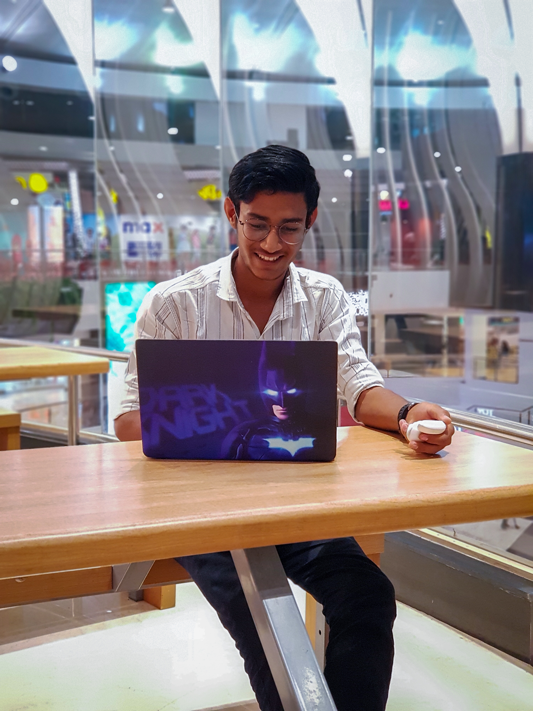

I am a dedicated and enthusiastic computer science student currently pursuing my Btech at MIT World Peace University. My passion lies in working on challenging projects and engaging in coding-related tasks. Proficient in Java, Python, and C++, I enjoy exploring the world of programming and constantly honing my skills.
Beyond programming, I also possess knowledge of web development, allowing me to create dynamic and interactive websites. I am eager to leverage my technical expertise and creativity to contribute meaningfully to the field of technology.
With a strong commitment to learning and a drive to stay updated with the latest advancements, I am always seeking opportunities to expand my horizons. My goal is to become a proficient professional in the computer science industry and contribute to innovations that positively impact society.
In addition to my technical prowess, I am a team player with excellent communication skills, enabling me to collaborate effectively with colleagues and clients. Adaptable and proactive, I approach challenges with a positive mindset, always striving to find innovative solutions.
As I build my resume and embark on my career journey, I am eager to find opportunities that will allow me to apply my knowledge and skills, making a meaningful impact in the world of technology.

My Work
These experiences have not only enriched my technical skills but have also taught me the importance of teamwork, creativity, and problem-solving in the world of computer science. I look forward to applying these skills and experiences to future challenges and opportunities in the field.
Educational Background
I completed my primary education at Shiv Sharda Public School, where I not only achieved outstanding academic results but also demonstrated leadership abilities. During my time there, I had the privilege of leading the Electronic Media Club and was appointed as the Electronic Media Prefect, fostering my early interest in multimedia and technology.
Following my successful school journey, I enrolled at Abasaheb Garware College. Despite the challenges posed by the pandemic and lockdowns, I proactively embraced opportunities to acquire new skills. I delved into fields like video editing and photography, honing my creative abilities in multimedia content creation. Additionally, I embarked on a web development course, mastering the basics of coding and expanding my technical prowess.
Currently, I am pursuing my degree at MIT World Peace University, where I am furthering my education in computer science. This academic journey reflects my unwavering commitment to personal and professional growth, driven by a profound passion for technology and continuous learning.
Skills
My skill set combines technical proficiency with creative abilities. In the realm of technology, I excel in web development and possess a solid grasp of Java, with a foundational understanding of Python.
In addition to my programming skills, I am well-versed in the creative arts. Video editing and photography are among my external skills, reflecting my aptitude for multimedia content creation. This dual proficiency enables me to approach projects with a versatile perspective, bridging the gap between technology and creativity.
More About Me
I am a dedicated and enthusiastic computer science student with a thirst for knowledge and a passion for innovation. Technology is my canvas, where I blend the art of coding with the science of problem-solving. This fusion has not only honed my technical skills but has also taught me the power of creative thinking and adaptability.
Outside the world of algorithms and code, I place great value on teamwork and effective communication. Whether collaborating with colleagues on a challenging project or engaging with clients to understand their needs, I find that building strong relationships is the cornerstone of success.
I approach challenges with a positive mindset and an unyielding determination to find innovative solutions. Adapting to rapidly evolving technology landscapes, I remain committed to learning and staying at the forefront of advancements in the field. My goal is to become a proficient professional, making a substantial contribution to the ever-growing realm of computer science and leading the charge toward innovations that have a positive and lasting impact on society.
In addition to my technical prowess, I view my work as a medium for meaningful change. My aspiration is to use my skills and knowledge to address real-world problems, bridging the gap between technology and human well-being. As I embark on my career journey, I am eager to seize opportunities that allow me to apply my expertise and creativity to create a world that is both technologically advanced and profoundly humane.
Goals
In my journey as a computer science student and aspiring professional, I have set several ambitious goals. These goals are the driving force behind my academic and career pursuits:
These goals serve as my roadmap for the future, propelling me toward a fulfilling and impactful career in computer science.
Future Aspirations
As I stand on the precipice of my journey in the field of computer science, my future aspirations are my guiding stars. They illuminate the path I wish to tread, both personally and professionally:
These future aspirations are the embodiment of my dreams and ambitions. They represent my commitment to continuous growth, the pursuit of excellence, and a dedication to making a lasting impact on the world through the realm of computer science.